Naissance et baptême
Jacques-Gabriel Duchastel de Montrouge naît le 14 août 1758 à Reims, en la paroisse Saint-Étienne, et y est baptisé le jour même. Il est le fils de Jean-Baptiste Duchastel de Montflambert, conseiller secrétaire du Roi, et de Louise-Nicole Cadot. Son parrain, Jean-Jacques Cadot, capitaine de la milice bourgeoise de Reims, et sa marraine, Gabrielle de la Motte, épouse de Firmin Martin de Vraine, président trésorier de France en la généralité de Soissons, lui donnent ses prénoms : Jacques-Gabriel.
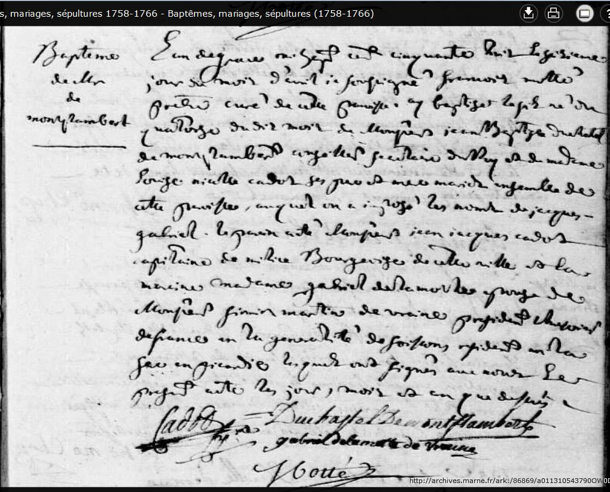
Une carrière dans les dragons du Roi
Vers 1778, à vingt ans, Jacques-Gabriel entre au service comme lieutenant dans le prestigieux régiment Colonel-Général des Dragons, alors en garnison en Bourgogne. Les dragons de l'Ancien Régime sont des unités hybrides : des fantassins montés, qui se déplacent à cheval mais combattent le plus souvent à pied, au fusil baïonnette ou au sabre. Leur uniforme est aussi reconnaissable que redouté — habit vert foncé, parements et doublures roses propres au régiment Colonel-Général, casque de cuivre à bandeau de peau et à crinière noire.
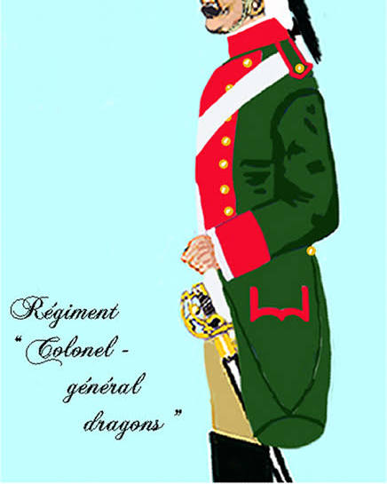
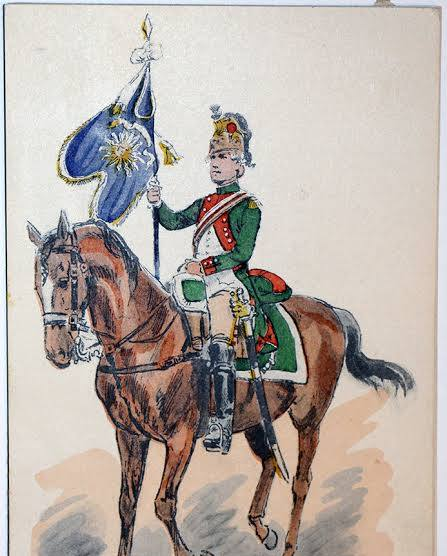
Le 15 avril 1788, à Versailles, Louis XVI signe personnellement le brevet qui nomme Jacques-Gabriel lieutenant en premier de la compagnie de fusiliers de Micault, alors vacante par la mort du sieur de la Coudre. Ce document, contresigné par le comte de Brienne, secrétaire d'État à la Guerre, est le premier à faire figurer le nom « Duchastel de Montrouge ». Un an à peine avant la Révolution, le jeune officier de trente ans y est encore désigné comme « ci-devant lieutenant dans le Régiment du Colonel-Général des Dragons ».
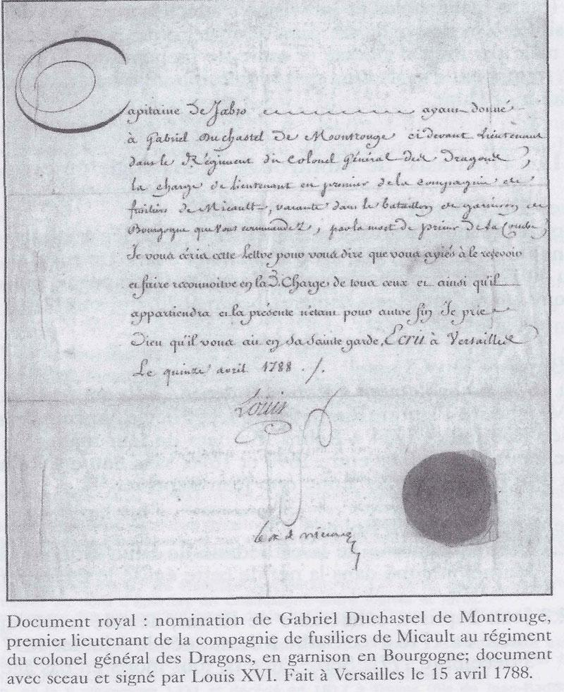
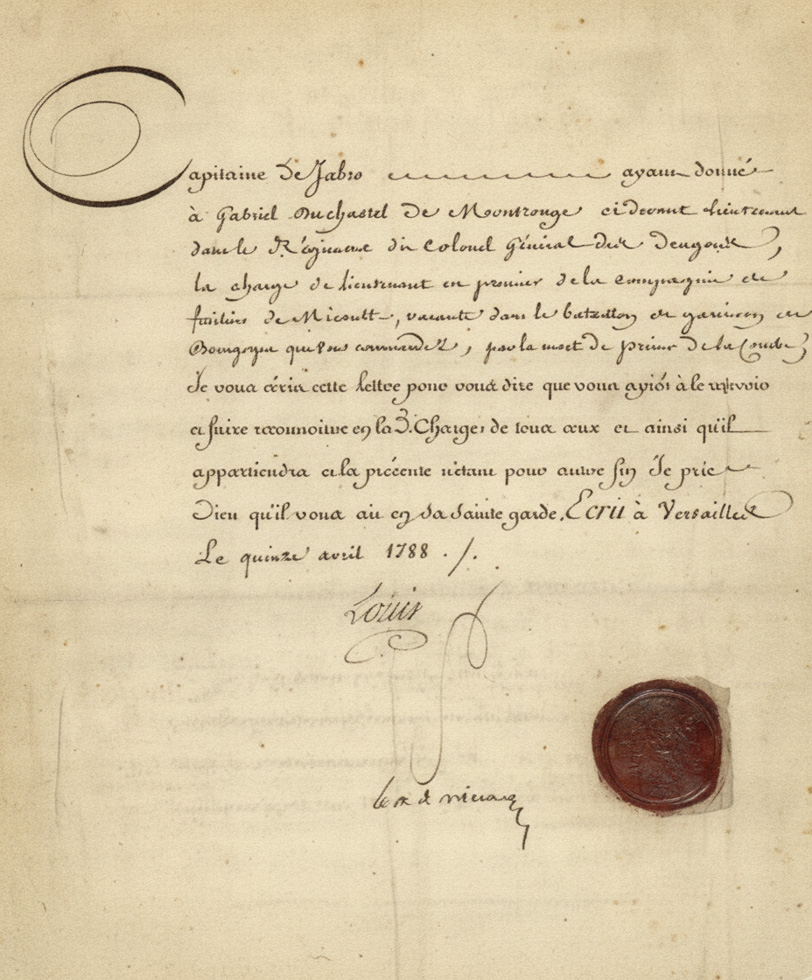
Mariage avec Philippine-Élisabeth Durand de Courmont
Le 9 janvier 1781, à Rethel, Jacques-Gabriel épouse Philippine-Élisabeth Durand de Courmont, qui n'a que dix-sept ans — lui-même en a vingt-deux. La cérémonie est célébrée par M. Pillas, curé-doyen de Rethel, en présence de Montflambert, père du marié, des parents de l'épouse et de nombreux amis. Philippine-Élisabeth est la fille de feu Jean-Baptiste Quentin Durand de Courmont, avocat au Parlement, ancien conseiller du roi, lieutenant particulier du bailliage et maire royal de Rethel, mort en 1773, et d'Élisabeth Bourgogne, issue d'une famille notable de Reims.
Les Durand de Courmont forment une lignée de la haute bourgeoisie de robe solidement implantée à Rethel depuis le XVIIe siècle : le grand-père de la mariée, Jacques-Quentin Durand, né en 1687 à Rethel, avait épousé en 1719 Jeanne-Élisabeth Chastelain, de Château-Porcien. Comme bien des familles de robe de l'Ancien Régime, les Durand avaient accolé à leur patronyme le nom d'une terre, Courmont, pour se distinguer et rehausser leur rang.
La vie de famille à Séry
Le jeune couple s'installe à Séry, un village des Monts de Séry, à deux lieues au nord-ouest de Rethel — soit environ huit kilomètres. Trois enfants y naissent : Jeanne-Élisabeth, le 4 septembre 1781 ; Alexandre-Louis-François, le 1er juillet 1784 ; et Jean-Jacques, le 30 décembre 1786. Le 12 mai 1791, une annonce du Journal de Champagne confirme que la famille réside toujours à Séry à cette date, à la veille des grands bouleversements qui allaient suivre.
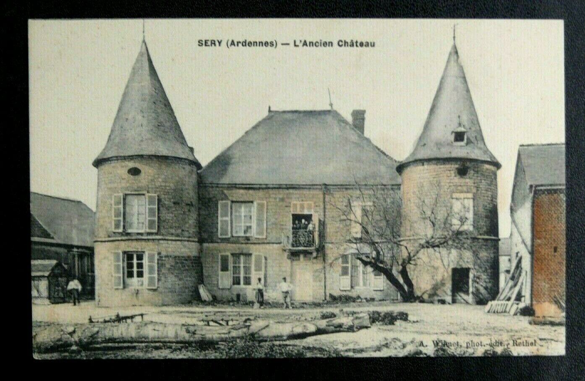
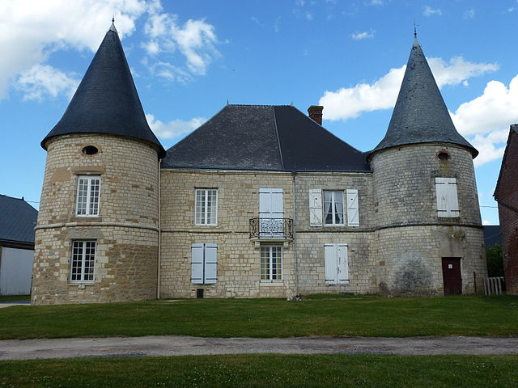
Le 59e régiment d'infanterie de Bourgogne et la Révolution
La Révolution bouleverse l'armée royale. Le 1er janvier 1791, l'Assemblée constituante supprime les noms honorifiques des régiments : le Colonel-Général des Dragons devient le 5e régiment de dragons. Après la fuite du roi à Varennes en juin 1791, nombre d'officiers nobles émigrent ; d'autres, comme Jacques-Gabriel, choisissent de passer dans l'infanterie plutôt que de rester dans une cavalerie marquée par le royalisme. C'est ainsi qu'il rejoint le 59e régiment d'infanterie, ci-devant régiment de Bourgogne.
Ce régiment est alors déployé dans le Midi de la France, où la Révolution s'accompagne de violences religieuses et politiques : la Constitution civile du clergé (1790) divise catholiques et partisans de la Révolution, tandis qu'Avignon et le Comtat Venaissin, terres pontificales, sombrent dans une véritable guerre civile locale. Les bataillons de Bourgogne y sont envoyés pour maintenir l'ordre, bien avant l'entrée en guerre officielle de la France.
Le 1er bataillon est en garnison à Draguignan, le 2e bataillon à Uzès.
Le 2e bataillon est transféré à Carpentras, dans le Comtat Venaissin, pour y imposer la fin des combats entre « patriotes » avignonnais et partisans du Saint-Siège.
Le 1er bataillon se trouve en garnison à Alais et Sommières, dans les Cévennes ; le 2e bataillon est à Carpentras, avant un départ prévu en mars pour Montpellier.
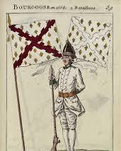
Une mort prématurée
Jacques-Gabriel Duchastel de Montrouge meurt le 25 mars 1792 à Reims, à l'âge de trente-trois ans ; il est inhumé le lendemain au cimetière Saint-Denis, selon le registre de l'église métropolitaine. Sa mort ne peut être due à une blessure de guerre : l'Assemblée législative ne déclare la guerre à l'Autriche que le 20 avril 1792, près d'un mois plus tard, et son régiment se trouve alors dans le sud de la France, loin de tout front. Tout indique plutôt une maladie, qui l'aura contraint à quitter le service et à revenir mourir à Reims, dans sa ville natale, où résidaient encore sa mère et sa belle-mère, Élisabeth Bourgogne.
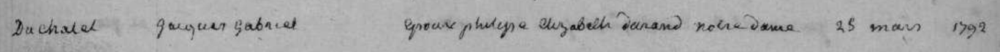
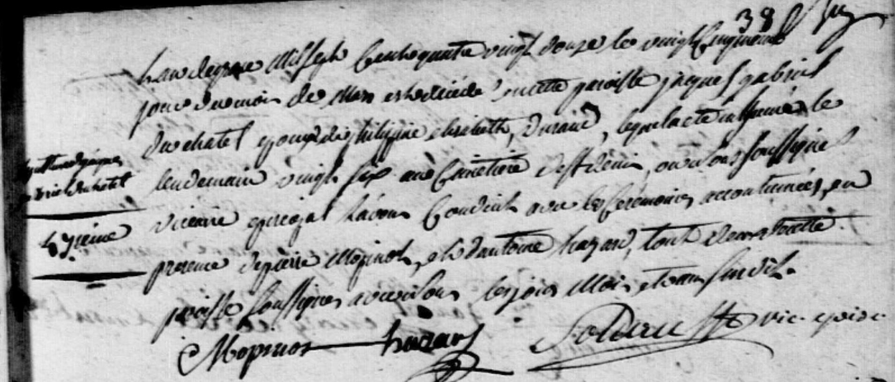
Deux mois plus tard, le 21 mai 1792, une annonce paraît pour vendre les biens de sa succession à Séry : une maison avec grande cour, jardin et vigne, cent quatorze arpents de terre, trente-deux de prés et vingt-six arpents de bois. Sa veuve, Philippine-Élisabeth, n'a alors que vingt-huit ans et trois jeunes enfants à charge ; elle traversera toute la tourmente de la Révolution et de l'Empire avant de s'éteindre le 13 août 1842, à Chenay, près de Reims, à l'âge de soixante-dix-huit ans.
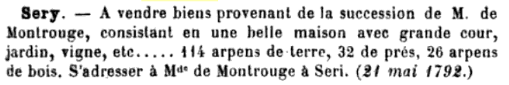
Trois enfants, un titre transmis
Élevés au cœur des bouleversements de la Révolution puis de l'Empire, les trois enfants de Jacques-Gabriel et de Philippine-Élisabeth connaissent des destins contrastés.
Jeanne-Élisabeth Duchastel de Montrouge
1781–1838. Aînée de la fratrie, née l'année même du mariage de ses parents. Elle mène une vie discrète en Champagne et s'éteint en 1838, à cinquante-sept ans.
Alexandre-Louis-François Duchastel Gén. VI — 1er Baron de Montrouge
1784–1863. Il n'a que huit ans à la mort de son père. Il n'hérite pas directement d'un titre de baron : c'est en 1830, à la mort de son oncle paternel Jacques-Jean-Baptiste Duchastel-Berthelin, dit baron de Montflambert et mort sans enfants, qu'il recueille le titre et prend le nom de baron de Montrouge. Marié le 19 mai 1813 à Reims à Sophie Le Goix, il s'installe d'abord à Reims puis à Paris à partir de 1823. De ses deux fils, Victor meurt jeune ; Jules-Jean-Baptiste (1823–1889) poursuit la lignée qui donnera Léon Duchastel de Montrouge, consul de France à New York puis à Québec et à Montréal, et par lui la branche canadienne de la famille.
Jean-Jacques Duchastel de Montrouge, dit « Baron de Montflambert »
1786–1809. Le plus jeune des trois connaît un destin aussi bref que celui de son père. Engagé dans l'armée impériale, il meurt au service de Napoléon en 1809, à vingt-trois ans, lors des campagnes d'Allemagne ou d'Autriche — l'année des batailles d'Essling et de Wagram. Il s'éteint célibataire et sans descendance.